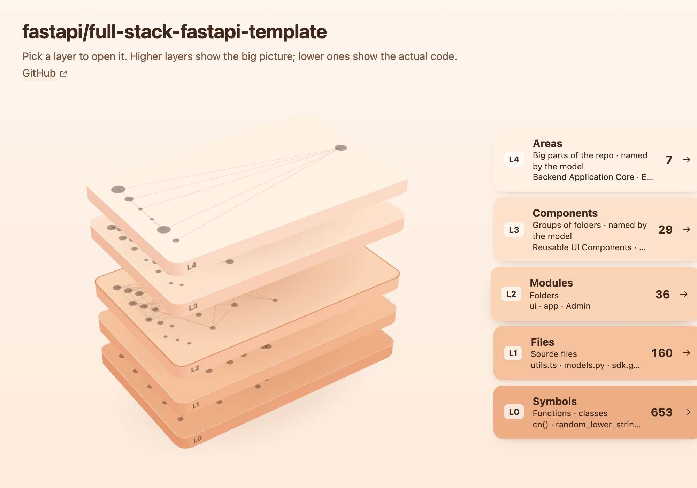
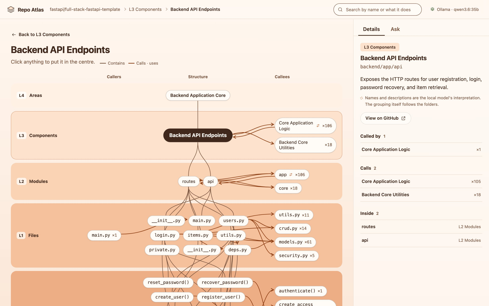
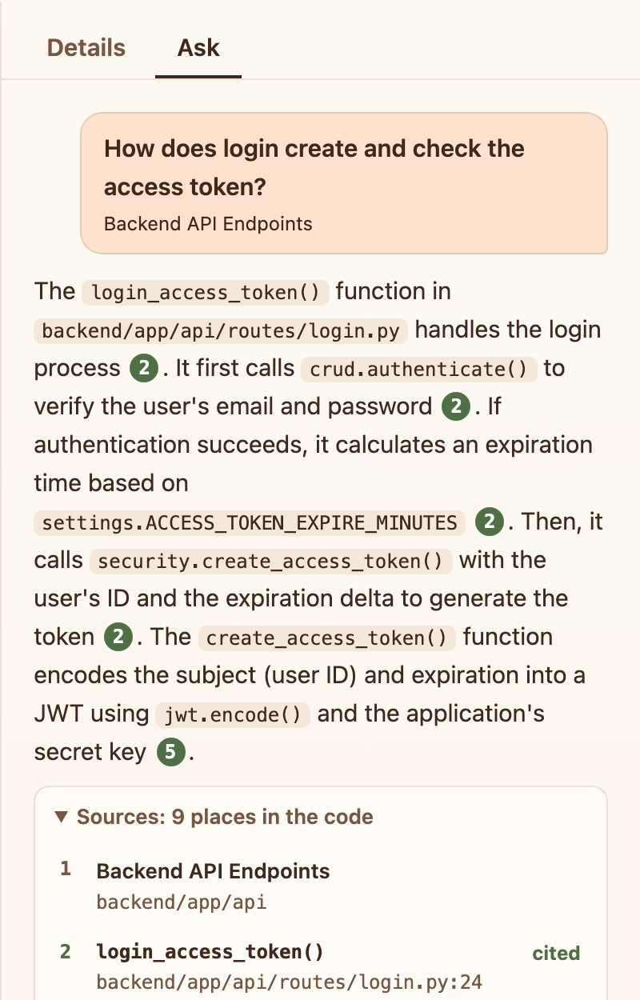
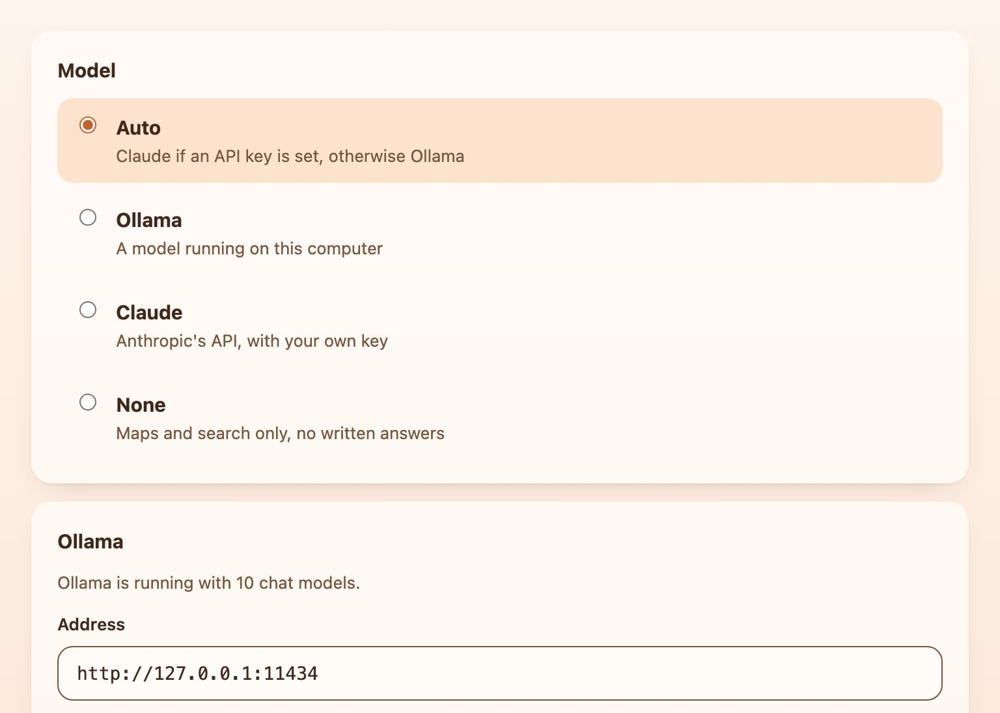

A map of any GitHub repo, on your machine
For your first week on a new codebase. Repo Atlas reads a repository once and lays it out in five layers, from whole areas down to single functions. Every arrow is a real call.
npx @cpldxx/repo-atlas
Free to run. Needs Node 18+ and git.


Five map layers, repo to function
Pick a layer and it opens flat, callers on the left and what they call on the right. The bottom three come straight from the code. The top two are grouped from the folders and named by the model you choose.
Mind map: what any part calls
Click anything for its mind map: containers above, contents below, callers on the left, callees on the right. Click a neighbour and it moves to the centre.


Ask the map, get its sources
Questions go to the part of the map you are looking at. Repo Atlas reads the related code, writes a short answer, and numbers every source so you can open the exact function.
With no model connected, you still get the code locations.


Repo Atlas runs on your machine
- No account, nothing to sign up for. One command starts it on your computer. Maps and settings live in
~/.repo-atlas. - Your choice of model. With Ollama, everything stays on your computer. With Claude, your question and the code it reads go to Anthropic under your own API key.
- Built on Graphify. The code is parsed into a knowledge graph on your computer, before any model sees it.

